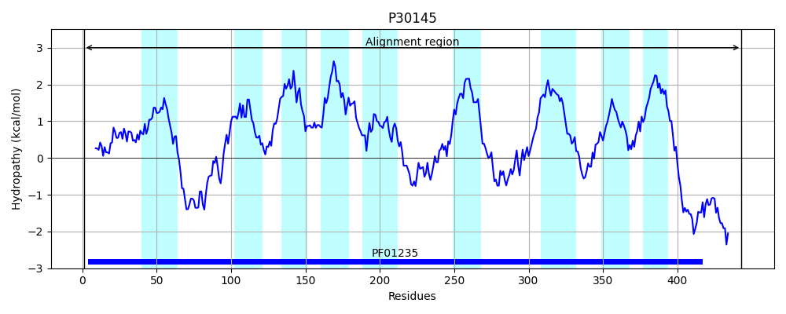

Hit Accession: P30145
Hit TCID: 2.A.25.1.2
Hit Description: gnl|BL_ORD_ID|9710 gnl|TC-DB|P30145|2.A.25.1.2 SODIUM/PROTON-DEPENDENT ALANINE CARRIER PROTEIN - Bacillus PS3 (Thermophilic bacterium PS-3).
Mach Len: 479
e:0.000000
Query TMS Count : 11
Hit TMS Count: 9
TMS-Overlap Score: 7.000000
Predicted Substrates:CHEBI:9175;sodium(1+), CHEBI:5584;hydron, CHEBI:2539;alanine
BLAST Alignment:
Score: 1052 , Bit scores: 409 bits, E-value: 1.6e-139, Alignment length: 479, Percentage identity: 47
Query: 44 MIRLMFQGEKSPNGISSFQAIAMSLAGRVGTGNIVGVSTAIFIGGPGAVFWMWITAFLGASSAFIESTLGQIFKRVENNEYRGGPAYYIEYGIGGKFGKIYGIIFAIVTII-SVGLLLPGVQSNAIASSMHNAIHVPQWLMGGIVVVILGLIIFGGVRIIANVATAVVPFMAIIYILMAVIIICINIQEVPALFALIFKSAFGLQSAFGGIVGAMIEIGVKRGLYSNEAGQGTGPHAAAAAEVSHPSKQGLVQAFSVYIDTLFVCTATALIILISGTYNVTDGTVNANGTPHLIKDGGIYVENATGKDYSGTAMYAQAGIDKAFHGSGYQFDPTFSGVGSYFIAFALFFFAFTTILSYYYITETNVAYLTRNQNNQVSSIFINIARVIILFATFYGAVKTADVAWAFGDLGVGLMAWLNIIAIWILHKPAVNALKDYEIQKKRLGNGYNAVYQPDPNKLPNAVFWLKTYPERLKQARAK 521
MIRL+ G+ S G+SSFQA+ MSL+GR+G GN+ G +T I GGPGAVFWMW+ F+GA++A++EST + KR + + ++ + G G+ + II S+ +L+PG+Q+N+IA S NA +P+ + G V+ +LG IFGGV+ IA A VVPFMA+ Y+ +A+ II NI++VP +F LIFKSAFG FGGI+G+ + GVKRGLY+NEAGQGTG H AAAAEVSHP+KQGLVQAFS+Y+D V TATAL+IL +G YNV + K G VE+ G + A Y QA + D F G GS FIA ALFFFAFTT+ +YYYI ETN+AYL R++ + + +++ L ATFYG VKTA AWA GD+G+G+M WLN+IAI +L KPA ALKDYE Q K+ G + + + NA FW Y +R ++ + K
Sbjct: 1 MIRLVTMGKSSEAGVSSFQALTMSLSGRIGVGNVAGTATGIAYGGPGAVFWMWVITFIGAATAYVESTWRKFIKRNKTDNTVAVRRSTLKKALAGN-----GLRCSRAAIILSMAVLMPGIQANSIADSFSNAFGIPKLVTGIFVIAVLGFTIFGGVKRIAKTAEIVVPFMAVGYLFVAIAIIAANIEKVPDVFGLIFKSAFGADQVFGGILGSAVMWGVKRGLYANEAGQGTGAHPAAAAEVSHPAKQGLVQAFSIYLDVFLVVTATALMILFTGQYNVINE-----------KTGETIVEHLKGVEPG--AGYTQAAV-----------DTLFPGFGSAFIAIALFFFAFTTMYAYYYIAETNLAYLVRSEKRGTAFFAL---KLVFLAATFYGTVKTATTAWAMGDIGLGIMVWLNLIAILLLFKPAYMALKDYEEQLKQ---GKDPEFNASKYGIKNAKFWENGY-KRWEEKKGK 443 | Protein Hydropathy Plots: |
|---|
|  |
Pairwise Alignment-Hydropathy Plot:
|
|---|
|